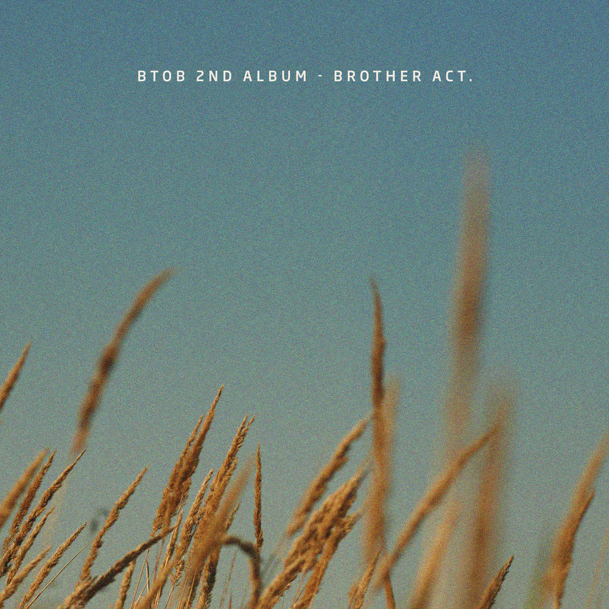
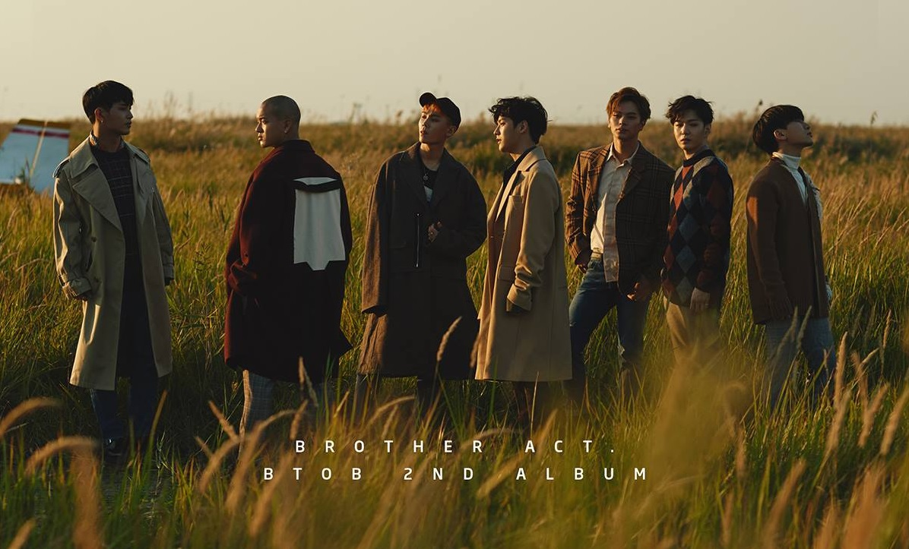

안녕하세요 라보엠입니다
오늘은 BTOB(비투비)의 대표곡 중 하나인 그리워하다에 대해 소개해드리려고 합니다. 사실 오늘 아침 정지영의 라디오를 듣다가 이 노래가 나와서 반가웠거든요. 2017년 10월 발매된 이 곡은 비투비의 정규 2집 Brother Act. 앨범의 타이틀 곡으로, 발매 직후부터 큰 사랑을 받았습니다.

뮤직비디오
뮤직비디오는 멤버들의 감성적인 연기와 함께 그리움에 잠긴 모습을 담아냈습니다. 각 멤버들의 개성 있는 목소리와 표정 연기가 노래의 감성을 더욱 극대화시켰습니다. '그리워하다'는 단순히 연인을 그리워하는 노래를 넘어, 우리 삶에서 경험하는 다양한 형태의 그리움을 대변합니다. 떠나간 사람, 지나간 시간, 잃어버린 꿈 등 우리가 마음 한 켠에 품고 있는 모든 그리움을 노래하고 있습니다.
BTOB 비투비 - 그리워하다 곡 정보
제목: 그리워하다
아티스트: BTOB(비투비)
앨범: Brother Act. (정규 2집)
발매일: 2017년 10월 16일
작사: 임현식, 이든(EDEN), 이민혁, 프니엘, 정일훈
작곡: 임현식, 이든(EDEN)

그리워하다 노래 가사
My life is incomplete
It's missing you
1.
오늘도 하루를 보내 다를 게 없이
하나도 안 어색해 혼자 있는 게 yeah
너 없인 안 될 것 같던 내가 이렇게 살아
근데 좀 허전해 난 여전히 거기 있나 봐
Yeah 후련하게 다 털어내 (다, 다)
지난 일에 마음 쓰는 게 it's alright
답이 잘 보이는가 싶다가도
어느새 날 가두는 감옥이 돼 yeah
시간은 앞으로만 가는 걸 어째
그동안 난 아무것도 이룬 것이 없네 yeah
아직도 내 마음속엔 너 oh, oh
너를 그리워하다 하루가 다 지났어
너를 그리워하다 일 년이 가버렸어
난 그냥 (난 그냥) 그렇게 살아 (그렇게 살아)
너를 그리워하다, 그리워하다
2.
다 괜찮을 거라 되뇌어 봐도
내 하루에 끝엔 또 너로 남아 oh, oh
너 없인 안 될 것 같던 내가 이렇게 살아
사실 좀 허전해 넌 여전히 여기 있나 봐
내 마음은 여전해 (hey) 아직 너를 원해 (원해)
몇 년이 지나도 난 아직 널 그리워해 (그리워)
난 아직 기억해 (hey) 우리 처음 봤을 때 (hey)
네 옷차림과 머리 스타일도 다 정확하게 (I say)
I pray for you every night and day
I hope that someday soon I can see you once again, yeah
아직도 내 마음속엔 너 oh, oh
너를 그리워하다 하루가 다 지났어
너를 그리워하다 일 년이 가버렸어
난 그냥 (난 그냥) 그렇게 살아 (그렇게 살아)
너를 그리워하다, 그리워하다
잠에서 깨어 헝클어진 머리처럼
내 일상도 꽤나 엉망이 돼버렸어 책임져
아무렇지 않은 척 드리워진 표정도 내 모든 곳에
스며든 네 흔적도 다 책임져 아직도 난
잊을 수 없나 봐 다시 돌아와 줘 oh
또다시 같은 엔딩이라 해도 너
너를 그리워하다 하루가 다 지났어
너를 그리워하다 일 년이 가버렸어
(No-oh) 너를 잊으려 하다 하루가 지나가도 (지나가도)
너를 지우려 하다 일 년이 가버려도 (no-oh)
난 그냥 (난 그냥) 그렇게 살아 (그렇게 살아)
너를 그리워하다 (oh-oh) 그리워하다
그리워하다, 그리워하다
노래 소개
그리워하다는 시간이 흘러도 잊지 못하는 연인에 대한 그리움을 담은 발라드곡입니다. 비투비 특유의 감미로운 보컬과 서정적인 멜로디가 어우러져 많은 이들의 공감을 얻었습니다. 가사에는 헤어진 연인을 그리워하는 마음이 섬세하게 표현되어 있습니다. "너를 그리워하다 하루가 다 지났어 / 너를 그리워하다 일 년이 가버렸어"라는 후렴구는 시간이 흘러도 변하지 않는 그리움을 잘 나타내고 있습니다.
이 노래는 발매 직후 각종 음원 차트 상위권에 오르며 인기를 끌었습니다. 멜론 차트에서는 93시간 동안 1위를 유지하는 기록을 세웠고, 음악 방송에서도 7관왕을 차지하는 등 비투비의 대표곡으로 자리매김했습니다. 많은 팬들이 이 곡을 통해 위로를 받았다고 합니다. 특히 가사의 공감성과 멤버들의 감성적인 보컬이 큰 호응을 얻었습니다. 콘서트나 팬미팅에서 '그리워하다'가 불릴 때면 팬들과 함께 부르는 떼창으로 감동적인 순간을 만들어내곤 합니다.
맺음말
비투비의 그리워하다는 발매된 지 몇 년이 지난 지금도 여전히 많은 사랑을 받고 있는 명곡입니다. 그리움이라는 보편적인 감정을 아름다운 멜로디와 가사로 표현해낸 이 노래는, 앞으로도 오랫동안 많은 이들의 마음을 울릴 것 같습니다.
여러분도 '그리워하다'를 들으며 마음 속 그리움을 달래보는 건 어떨까요? 때로는 그리움을 인정하고 받아들이는 것도 필요할 테니까요. BTOB와 함께 여러분의 그리움을 노래해보세요.